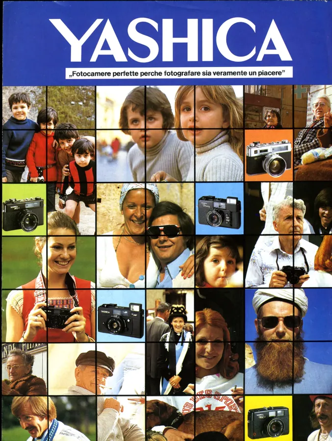
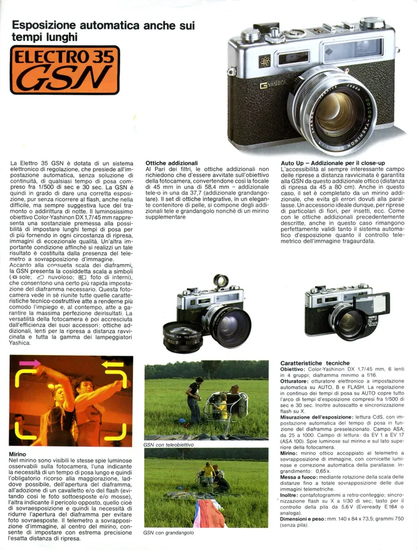
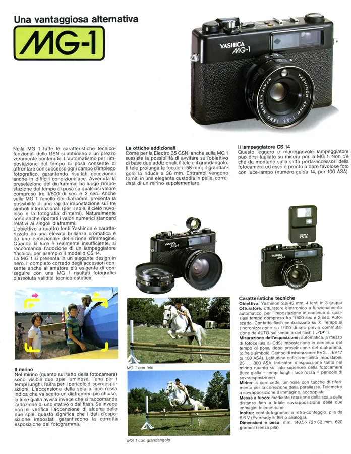
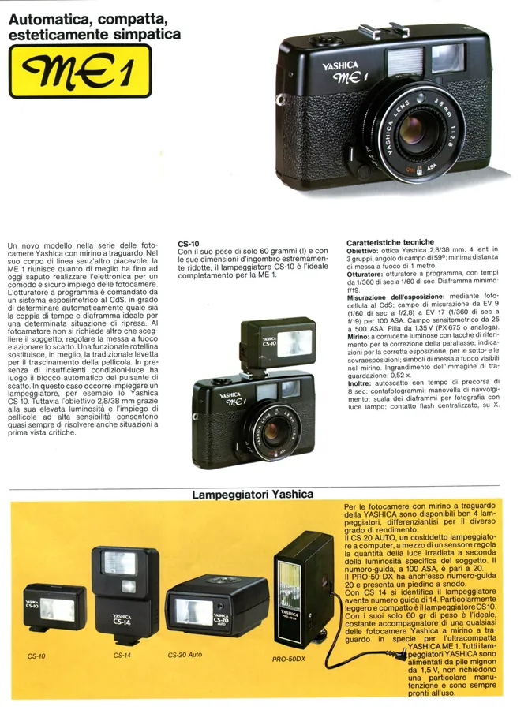
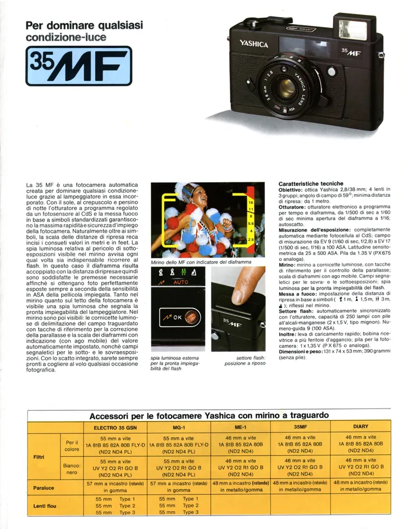
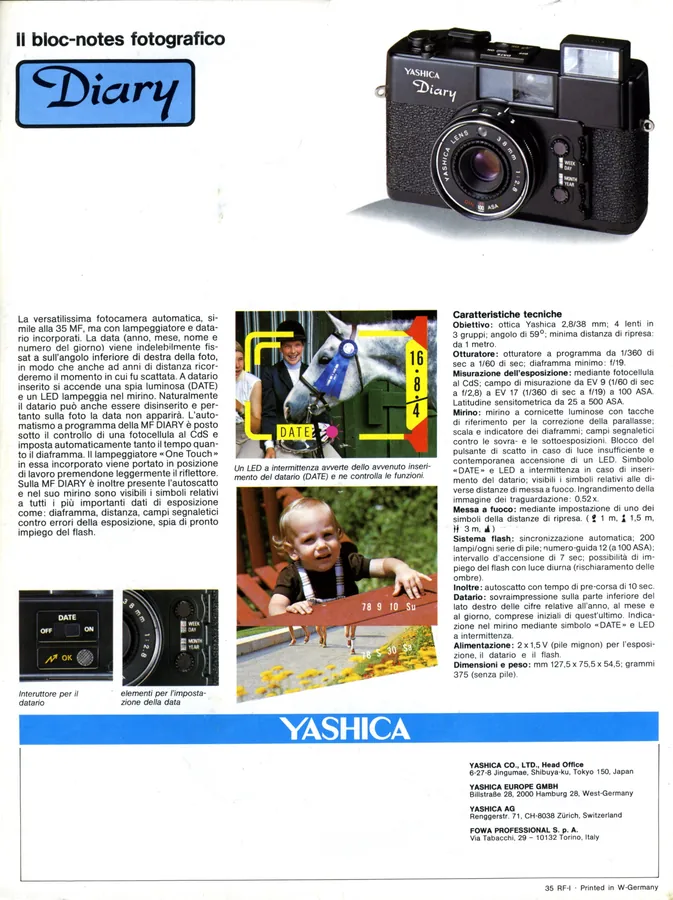

Przejdź do treści
Zenbliski
Menu
Archiwalne
Analogowe
Kolekcja
Akcesoria foto
Materiały reklamowe
Artykuły – blog
Foto ciekawostki
Cyfrowe
Materiały reklamowe
Foldery i prospekty
Yashica Electro 35 GSN,
MG-1,
ME 1, 35 MF, Diary, ok. 1978 r., włoski






Poprzednia
Yashica catalogue général 1973, francuski
Następna
Yashica FR, FR I, FR II, włoski i hiszpański